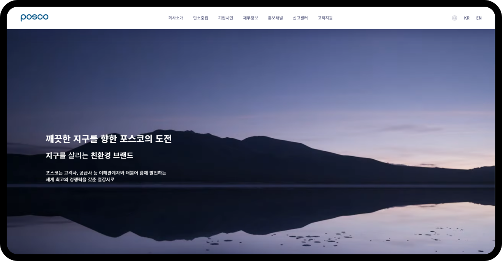

반응형 웹 리디자인 및 퍼블리싱
포스코 사이트를 반응형 웹 사이트로 퍼블리싱 했습니다.
포스코 posco
기간 : 23.06.08 ~ 23.06.15
개인작업

기간 : 23.06.08 ~ 23.06.15
개인작업
포스코 기업이 내세운 친환경 철강 전문성이 돋보일 수 있도록 리디자인 하고자 했습니다
라인과 여백을 사용해 심플하면서도 조화롭게 구성했으며 깔끔한 이미지를 위해
정돈된 레이아웃과 가독성 있는 폰트를 사용했습니다.
해상도에 따른 사이즈 변화를 위해 px이 아닌 가변 가능한 vw, vh 사용
가독성을 높이기 위한 줄바꿈 word-break 사용
@media="(width >=1165px)” / @media="(width >=768px)” / @media="(width >=500px)”
flex 사용 웹페이지 레이아웃 제작
이미지 박스 hover 시 해당 이미지 내용 출력
스크롤 위치에 따른 nav 바 생성 변화 이벤트
유사한 video로 대체하여 iframe tag를 이용해 비율 제어 문제를 해결함.
html에서의 img tag에 사용한 이미지 사이즈의 비율이 1 : 1이 아니어서 문제가 발생하였으므로 사이즈 수정 후 해결함
브랜드 로고별로 동일한 여백과 사이즈 조절을 단순히 margin 혹은 padding으로만 조절하려 해서 사이즈 조절이 힘들었음, 그러나 background-size : %로 조절하여 해결함.